[Java スタディ - 39] Web spring frameworkのJSPで使う言語 JSTL - 関数、データベース
こんにちは。明月です。
このページでは「Web spring framework」の「view」で使う「jstl」 - 関数、データベースに関して調べてみました。
前述でコアーとフォーマティングライブラリに関して投稿しましたが、続けて関数とデータベースのライブラリに続けます。
関数ライブラリ
fn:contains(string, sbustring)
- 文字列で文字の含め可否
<c:set var="name" value="hello world"/> <c:if test="${fn:contains(name, 'world')}"> Hello world </c:if>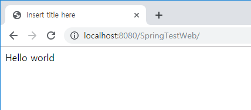
fn:containsIgnoreCase(string, sbustring)
- 文字列で文字の含め可否(大、小文字無視)
<c:set var="name" value="hello world"/> <c:if test="${fn:containsIgnoreCase(name, 'world')}"> Hello world </c:if>
fn:endsWith(string, suffix)
- 文字列で当該文字で終わる可否
<c:set var="name" value="hello world"/> <c:if test="${fn:endsWith(name, 'world')}"> Hello world </c:if>
fn:escapeXml(string)
- 特殊文字(<,>,&,',")をxmlエンティティコードに変換
<c:set var="name" value="< , > & ' ' \" \" "/> ${fn:escapeXml(name)}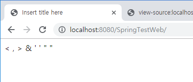
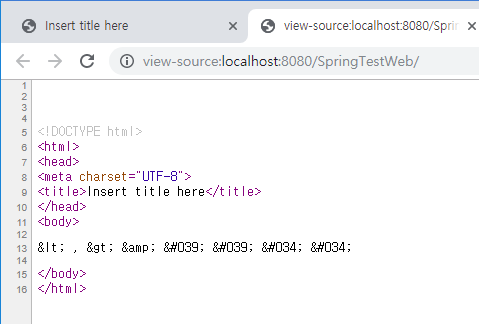
fn:indexOf(string, sbustring)
- 文字列で当該文字と一致するインデックス
<c:set var="name" value="hello world"/> ${fn:indexOf(name, "world")}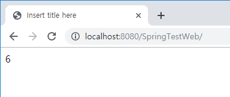
fn:split(string, separator)
- 文字列をseparatorの文字によって配列に分離
<c:set var="name" value="hello,world,good"/> <c:set var="arr" value="${fn:split(name,',')}"/> <c:forEach var="ret" items="${arr}"> ${ret} <br /> </c:forEach>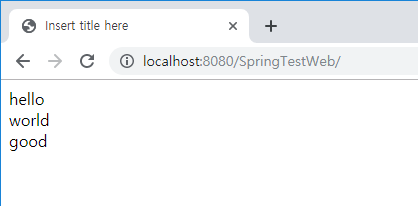
fn:join(array, separator)
- arrayをseparatorの文字によって結合
<c:set var="name" value="hello,world,good"/> <c:set var="arr" value="${fn:split(name,',')}"/> <c:set var="join" value="${fn:join(arr,'***')}"/> ${join}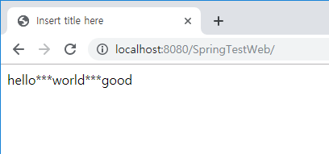
fn:length(string)
- 文字列の長さ
<c:set var="name" value="hello world"/> ${fn:length(name)}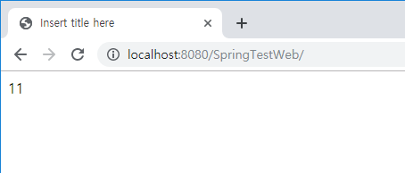
fn:replace(string, before, after)
- 文字列の中で「before」の文字列を「after」の文字列に置換
<c:set var="name" value="hello world"/> ${fn:replace(name,"world", "home")}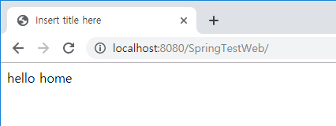
fn:startsWith(string, prefix)
- Stringがprefixで始まる可否
<c:set var="name" value="hello world"/> <c:if test="${fn:startsWith(name, 'hello')}"> Hello world </c:if>
fn:substring(string, before, after)
- 文字列で「before」から「after」まで出力
<:c:set var="name" value="hello world"/> ${fn:substring(name,6,8)}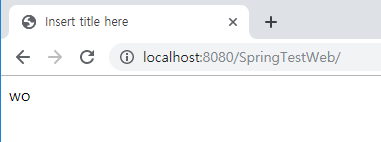
fn:substringAfter(string, sbustring)
- 文字列で当該な文字列以降を出力
<:c:set var="name" value="hello world"/> ${fn:substringAfter(name,"wo")}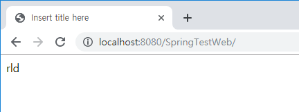
fn:substringBefore(string, sbustring)
- 文字列で当該文字列以前を出力
<c:set var="name" value="hello world"/> ${fn:substringBefore(name,"wo")}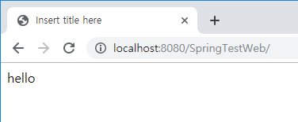
fn:toLowerCase(string)
- 文字列を小文字に出力する。
<c:set var="name" value="HELLO WORLD"/> ${fn:toLowerCase(name)}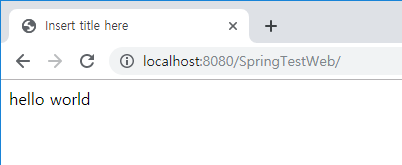
fn:toUpperCase(string)
- 文字列を大文字に出力する。
<c:set var="name" value="hello world"/> ${fn:toUpperCase(name)}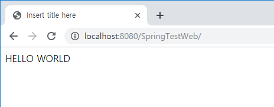
fn:trim(string)
- 文字列の前後の空白を取り除く。
<c:set var="name" value=" hello world "/> ${fn:trim(name)}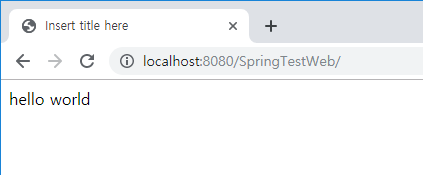
データベースライブラリ
最近、ウェブプロジェクトは画面でデータベースを接続してデータを取得することではなく、サーバサイドでデータを取得してデータを処理して画面で結果を渡しますね。
なので、最近はJSTLのデータベースライブラリは使うことはないと思いますが、ただ参考で説明します。
先、データベースコネクションライブラリが必要ですが私の場合は「mysql」で説明します。
<dependency> <groupId>mysql</groupId> <artifactId>mysql-connector-java</artifactId> <version>5.1.41</version> </dependency>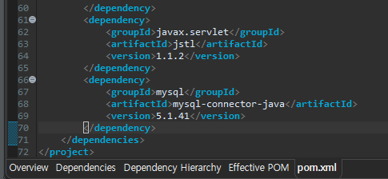
<%@ taglib prefix="sql" uri="http://java.sun.com/jsp/jstl/sql" %> <!-- コネクションタグ --> <sql:setDataSource url="jdbc:mysql://localhost:3306/test" driver="com.mysql.jdbc.Driver" user="id" password="pw" var="ds" scope="application"/> <!-- クエリタグ --> <sql:query var="rs" scope="page" dataSource="${ds}" maxRows="10" startRow="0"> select * from datatest where idx=? <sql:param value="1" /> </sql:query> <table> <tr> <c:forEach var="columnName" items="${rs.columnNames}"> <td><c:out value="${columnName}"/></td> </c:forEach> </tr> <c:forEach var="row" items="${rs.rowsByIndex}"> <tr> <c:forEach var="columnValue" items="${row}"> <td><c:out value="${columnValue}"/></td> </c:forEach> </tr> </c:forEach> </table>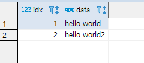
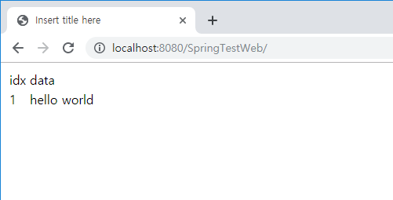
内容がなさそうだったのに、整理するとすごく多いですね。それで投稿を三つで分けって作成します。
link - 「Web spring framework」の「JSP」で使う言語 JSTL - コアー、フォーマッティング
- [Javaスタディ- 52] Java servletでインスタンスを初期する方法2019/10/17 07:15:48
- [Javaスタディ- 51] Spring web frameworkで発生する文字化けのEncoding設定2019/10/16 07:32:55
- [Javaスタディ- 50] Web Spring frameworkでfilter設定2019/10/15 20:12:35
- [Javaスタディ- 49] Web serviceのweb.xmlでエラーページ設定2019/10/14 20:13:44
- [Javaスタディ- 48] JPAのDAOをFactoryパターンで管理する方法2019/10/13 22:55:52
- [Java スタディ - 47] JPAのSpring frameworkで依存性注入する方法2019/10/13 00:40:08
- [Java スタディ - 46] JPAでDAOを生成する方法2019/10/11 07:30:14
- [Java スタディ - 45] JPAでトランザクションの使用方法とオブサーバーパターンで共通トランザクション関数を作り方2019/10/10 07:29:43
- [Java スタディ - 44] JPAのQuery を作り方2019/10/09 07:34:08
- [Java スタディ - 43] JPAのEntityクラス設定(Cascade, fetch)2019/10/08 07:43:33
- [Java スタディ - 42] JPAでpersistance.xml設定とentityクラス設定(@GeneratedValue設定)2019/10/07 07:38:13
- [Java スタディ - 41] EclipseでJPAフレームワーク設定する方法2019/10/04 19:24:43
- [Java スタディ - 40] Web spring frameworkのJSPで使う言語 JSTL - XML2019/10/03 20:02:06
- [Java スタディ - 39] Web spring frameworkのJSPで使う言語 JSTL - 関数、データベース2019/10/02 21:00:22
- [Java スタディ - 38] Web spring frameworkのJSPで使う言語 JSTL - コアー、フォーマッティング2019/10/01 21:48:08
- [PHP] Composer設定2019/12/27 08:49:09
- [PHP] PHP 開発環境設定とEclipse(IDE)の設定2019/12/26 07:36:47
- [CSS] ブラウザから開発する方法 (developer mode)2019/12/25 07:54:31
- [CSS] 色スタイル、グラデーション2019/12/24 07:37:22
- [CSS] アニメーション (animation)2019/12/20 20:51:38
- [CSS] トランスフォーム (transform)2019/12/19 13:00:26
- [CSS] トランジション(transition)2019/12/18 20:33:57
- [CSS] Columnスタイル2019/12/17 19:52:56
- [CSS] 整列スタイル (float)2019/12/17 00:08:54
- [CSS] 位置(position),表示(display)スタイル2019/12/13 20:08:50
- [CSS] border(枠)、余白スタイル - border, margin, padding2019/12/12 20:16:43
- [CSS] 文字スタイル2019/12/11 21:13:22
- [CSS] その他の疑似選択子 - link, visited, target, enabled, disabled, not, active, hover, focus2019/12/10 07:31:28
- [CSS] 疑似要素選択子 - fist-line, first-letter, before, after2019/12/09 07:28:27
- [CSS] 属性選択子2019/12/06 07:27:36